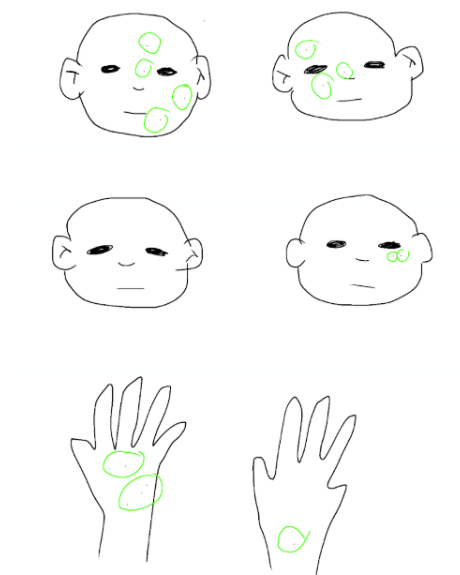
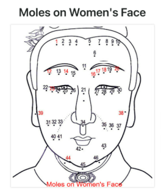

Because camera feature doesn't work when I am in github so here is the link
MOLE p5js Edit Page
This mole divination was inspired by the chinese mole divination where there are certain meanings to the placement of the mole and the total number. For this project I decided to focus on around the eyes, nose, and mouth only. Mole on the upper eyelid means life without definite belonging due to liking freedom. Mole on the lower eyelid means setback in love relationships...moles on nose tip means sign of profit while side of nose means frivolous personalities, above mouth means birth to twins and below mouth means suggesting lifelong drifting. During this process I first started out seeking a mole API without much success, and then a memes API that iamges wouldn't load because the path was broken. Lastly I created a small divination where the user can place the location of their own mole after their facial likeness is captured on the canvas, and it will give the user the description that will fit the placement of the mole the most, whether the user placed one or more, and if the user is entertained (ie: smile detected) the system resets. It is aimed to lessen the seriousness of the life predictions of the moles.
.

